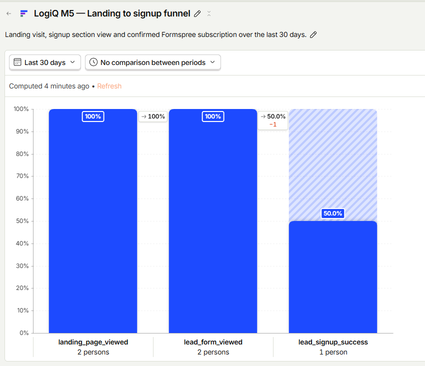
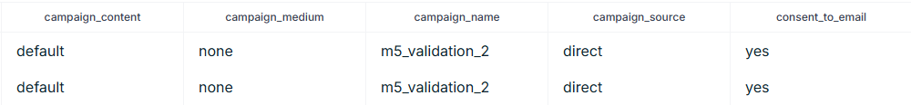

Personal
For friends or contacts who already check the news they read.
Personal invitation link →M5 / VALIDATION 2 · 26 NOVEMBER 2026
Readers can explore a sample news story without an account. For this experiment, we measure whether they also choose to leave an email for future testing.
02 / Baseline ·
These team-provided screenshots show that the tools received data. They do not establish how many external readers joined or which channel works best.


direct / none. Submissions are not unique people. Repeat entries, team tests and visitors without analytics can make the tools disagree. Neither row is attributed to the outreach links above.03 / Channel comparison
Post dates and channel-level counts have not been supplied yet. A dash means not reported, not zero.
| Source | Dated post or evidence | Landing visitors | Tracked successes | Distinct opt-in leads |
|---|---|---|---|---|
| Personal | Not documented | — | — | — |
| University | Not documented | — | — | — |
| Online | Not documented | — | — | — |
Record the time in Europe/Bucharest, the exact tagged link, the published post permalink and a redacted screenshot. For private messages, keep the invitation count and date without naming recipients.
Use one reporting window for all three channels. Show PostHog successes / unique tracked landing visitors, and separately count distinct consenting, non-test addresses in Formspree. Keep direct traffic separate. Record one observed behavior from a masked replay, if available.
Decision: No winning channel yet. Once evidence is available, compare both lead volume and tracked rate, show their denominators, and choose which invitation to repeat. A signup is not a sale.
View the customer-facing landing page →